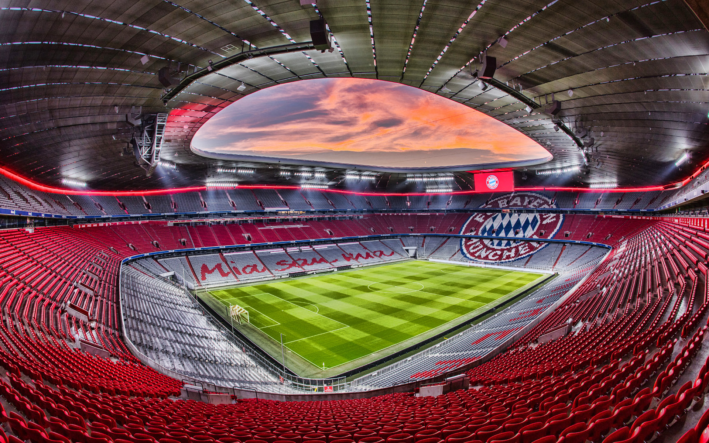
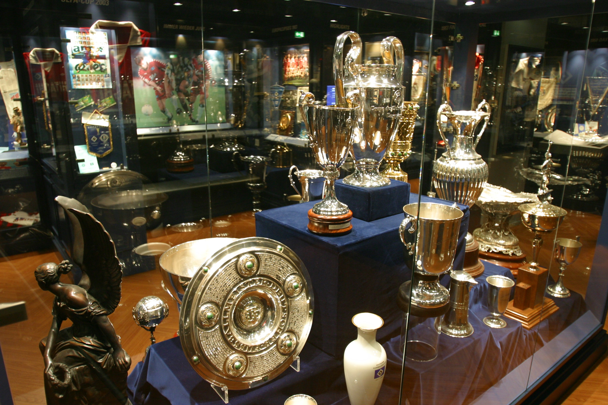
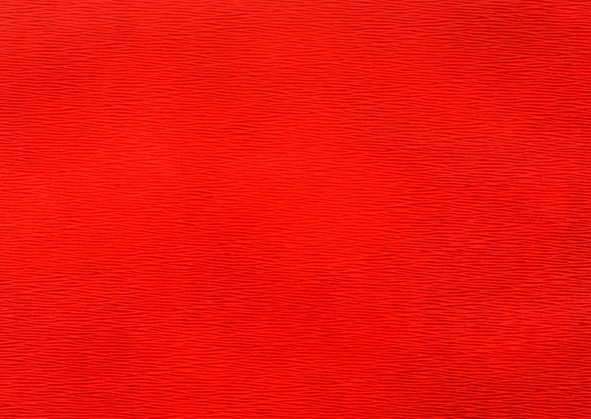
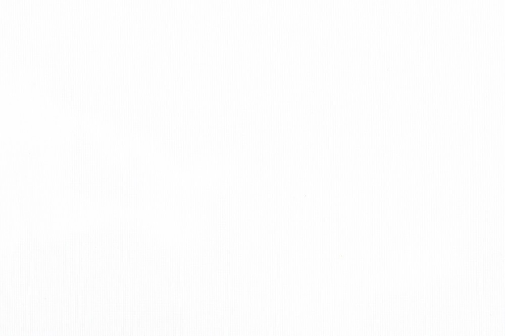

Добро пожаловать на сайт Баварии! Здесь вы узнаете о нынешнем составе Баварии, достижениях данного клуба и последних событиях в коллективе.🦿
Немного истории
Футбольный клуб «Бава́рия» Мюнхен (нем. Fußball-Club Bayern München e.V.; произношение: — профессиональный немецкий футбольный клуб из города Мюнхен. Основан в 1900 году. Самый титулованный клуб Германии и один из самых титулованных клубов мира. «Бавария» заняла 3-е место в списке лучших футбольных клубов XX века по версии ФИФА, 2-е место — по версии журнала Kicker. Также IFFHS поставил «Баварию» на 3-е место в рейтинге лучших европейских клубов XX века. «Бавария» является самым титулованным профессиональным футбольным клубом в Германии, на её счету 32 чемпионских титулов и 20 Кубков Германии, 6 побед — в Лиге чемпионов. В конце 2013 команда стала первым немецким клубом, выигравшим клубный чемпионат мира. В 2020 году «Бавария» вновь сделала «золотой хет-трик», став вторым клубом в истории европейского футбола, оформившим «требл» дважды. Также в Лиге чемпионов стала первым клубом в истории, которому удалось выиграть все матчи в отдельно взятом сезоне.
Основная информация о команде
Клубные цвета
 Эмблема клуба

Стадион
До 1925 года «Бавария» играла на одном из самых старых футбольных сооружений Германии, так называемой первой трибуне города; затем на протяжении многих лет делила муниципальный стадион с клубом «Мюнхен 1860», в честь которого стадион в народе назывался «Sechziger» («Шестидесятый»). Он был почти полностью разрушен во время Второй мировой войны, на реконструкцию было потрачено немало усилий, но все же стадион был открыт в назначенный срок и вмещал 44 тыс. человек. К летним Олимпийским играм 1972 года в Мюнхене построили Олимпийский стадион. В том же году на него переехала «Бавария». Трибуны стадиона и часть территории олимпийского парка покрыты гигантскими висячими перекрытиями-оболочками архитектора Фрая Отто. Изначально вместимость стадиона достигала 79 тыс. человек. В последующие годы стадион испытал несколько модификаций. Сейчас стадион имеет способность вмещать в себя 69 тыс. болельщиков для национальных состязаний и 59 тыс. зрителей для международных. В конце 1990-х стадион устарел в плане инфраструктуры и удобства для зрителей. В 2002 году совместно с «Мюнхеном 1860» был построен новый стадион «Альянц Арена», на которой все свои матчи и проводит команда. Арена подсвечивается разными цветами в зависимости от цветов клуба, который на ней играет. Арена подсвечена красным, когда на ней выступает «Бавария»; синим — когда играет «Мюнхен 1860»; белым — когда играет сборная Германии. Изначально арена находилась в совладении обоих клубов, но затем «Бавария» приобрела долю «Мюнхена 1860» и стала единственным владельцем стадиона. В мае 2012 года Бавария открыла музей истории клуба на территории Allianz Arena.
СтадионНынешний состав Баварии
Ссылка на нынешний состав